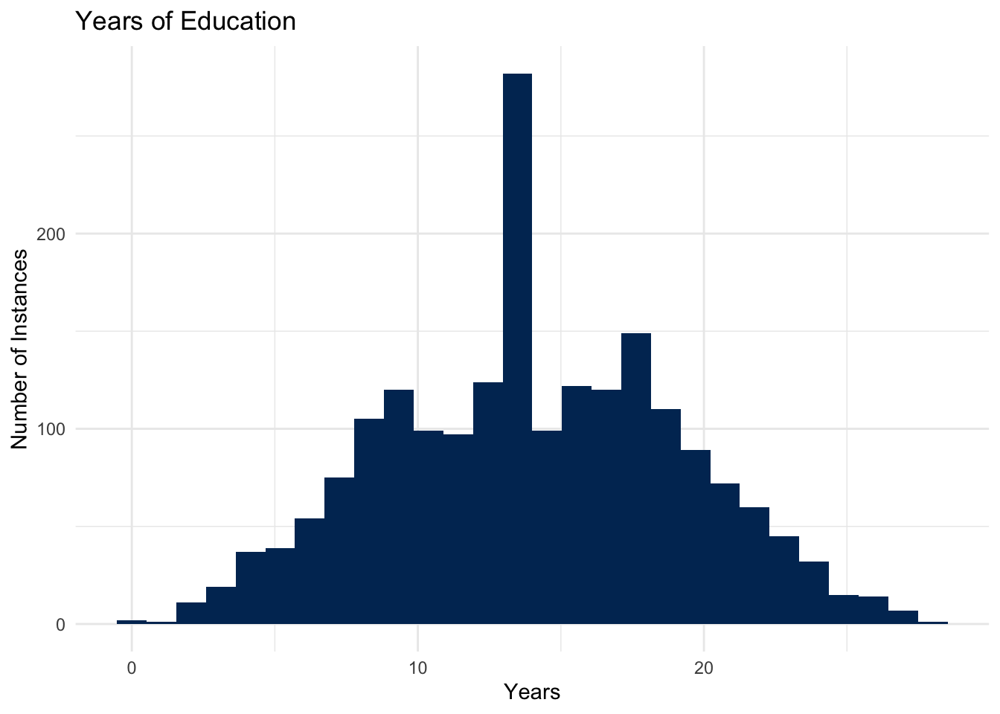
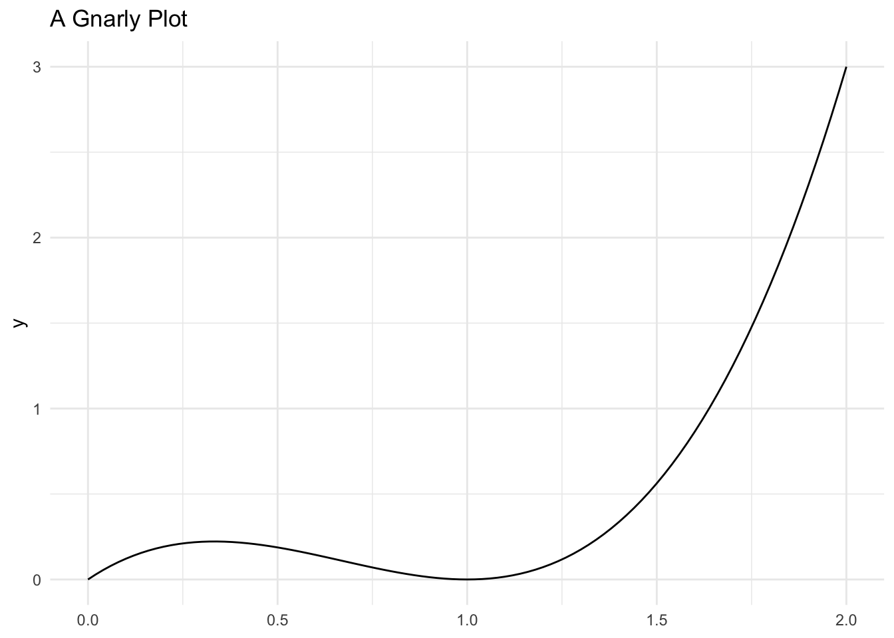
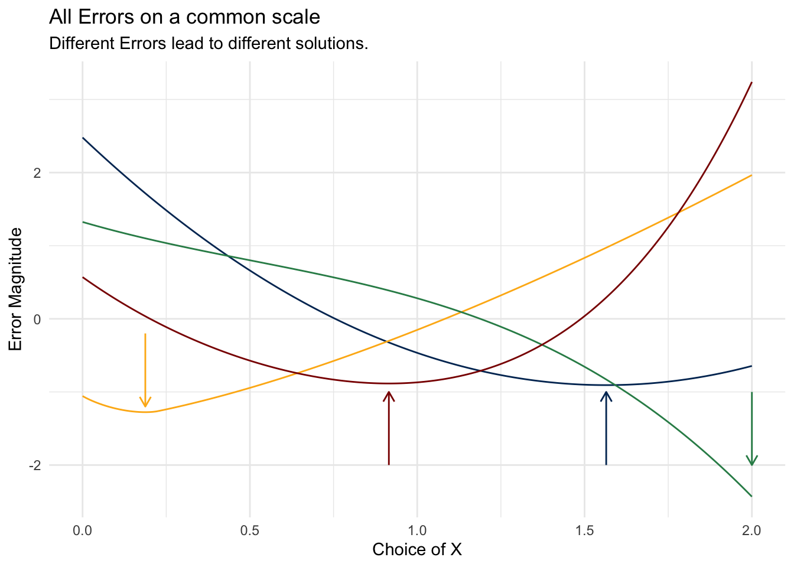

3 Summarizing Distributions

In the last live session, we introduced random variables; probability density and cumulative density; and, made the connection between joint, marginal, and conditional distributions. All of these concepts work with the entire distribution.
Take, for example, the idea of conditional probability. We noted that conditional probability is defined to be:
\[ f_{Y|X}(y|x) = \frac{f_{Y,X}(y,x)}{f_{X}(x)} \]
This is a powerful concept that shows a lot of the range of the reasoning system that we’ve built to this point! The probability distribution of \(Y\) might change as a result of changes in \(X\). If you unpack that just a little bit more, we might say that \(f_{Y|X}(y|x)\) – the probability density of \(Y\) – which is itself a function, is also a function of \(X\). To say it again, to be very explicit: the function is a function of another input. That might sound wild, but it is all perfectly consistent with the world that we’ve built to this point.
This concept is very expressive. Knowing \(f_{Y}(y)\) gives a full information representation of a variable; knowing \(f_{Y|X}(y|x)\) lets you update that information to make an even more informative statement about \(Y\). In Foundations and at this point in the class, we deal only with conditional probability conditioning on a single variable, but the process generalizes.
For example, if there were four random variables, \(A, B, C, D\), we could make a statement about \(A\) that conditions on \(B, C, D\):
\[ f_{A|\{B,C,D\}}(a|\{b,c,d\}) = \frac{f_{A,B,C,D}(a,b,c,d)}{f_{B,C,D}(b,c,d)} \]
In this week’s materials we are going to go in the opposite direction: Rather than producing a very expressive system of probabilities, we’re going to attempt to summarize all of the information contained in a pdf into lower-dimensional representations. Our first task will be summarizing a single random variable in two ways:
- Where is the “center” of the random variable; and,
- How dispersed, “on average” is the random variable from this center.
After developing the concepts of expectation and variance (which are 1 & 2 above, respectively), we will develop a summary of a joint distribution: the covariance. The particular definitions that we choose to call expectation, variance, and covariance require justification. Why should we use these particular formulae as measures of the “center” and “dispersion”?
We ground these summaries in the Mean Squared Error evaluative metric, as well as justifying this metric.
3.1 Learning Objectives
At the end of the live session and homework this week, students will be able to:
- Understand the importance of thinking in terms of random variables, while;
- Being able to appreciate that it is not typically possible to fully model the world with a single function.
- Articulate why we need a target for a model, and propose several possible such targets.
- Justify why expectation is a good model, why variance is a reasonable model, and how covariance relates two-random variables with a common joint distribution.
- Produce summaries of location and relationship given a particular functional form for a random variable.
3.2 Class Announcements
Where have we come from, and where are we going?
3.2.1 What is in the rearview mirror?
- Statisticians create a population model to represent the world; random variables are the building blocks of such a model.
- We can describe the distribution of a random variable using:
- A CDF for all random variables
- A PMF for discrete random variables
- A PDF for continuous random variables
- When we have multiple random variables,
- The joint PMF/PDF describes how they behave together
- The marginal PMF/PDF describes one variable in isolation
- The conditional PMF/PDF describes one variable given the value of another
3.2.2 Today’s Lesson
What might seem frustrating about this probability theory system of reasoning is that we are building a castle in the sky – a fiction. We’re supposing that there is some function that describes the probability that values are generated. In reality, there is no such generative function; it is extremely unlikely (though we’ll acknowledge that it is possible) that the physical reality we believe we exist within is just a complex simulation that has been programmed with functions by some unknown designer.
Especially frustrating is that we’re supposing this function, and then we’re further saying,
“If only we had this impossible function; and if only we also had the ability to take an impossible derivative of this impossible function, then we could…”
3.2.2.1 Single number summaries of a single random variable
But, here’s the upshot!
What we are doing today is laying the baseline for models that we will introduce next week. Here, we are going to suggest that there are radical simplifications that we can produce that hold specific guarantees, no matter how complex the function that we’re reasoning about.
In particular, in one specific usage of the term best we will prove that the Expectation operation is the best one-number summary of any distribution. To do so, we will define a term, variance, which is the squared deviations from the expectation of a variable that describes how “spread out” is a variable. Then, we will define a concept that is the mean squared error that is the square of the distance between a model prediction and a random variable’s realization. The key realization is that when the model predicts the expectation, then the MSE is equal to the variance of the random variable, which is the smallest possible value it could realize.
3.2.2.2 Single number summaries of relationships between random variables
Although the single number summaries are incredibly powerful, that’s not enough for today’s lesson! We’re also going to suggest that we can create a measure of linear dependence between two variables that we call the “covariance”, and a related, re-scaled version of this relationship that is called the correlation.
3.2.3 Future Attractions
- A predictor is a function that provides a value for one variable, given values of some others.
- Using our summary tools, we will define a predictor’s error and then minimize it.
- This is a basis for linear regression
3.3 Discussion of Terms
3.3.1 Expected Value
We define the expected value to be the following for a continuous random variable:
3.4 Expected Value
For a continuous random variable \(X\) with PDF \(f\), the expected value of \(X\), written \(E[X]\) is
\[ E[X] = \int_{-\infty}^{\infty}xf_{X}(x) dx \]
Oh, ok. If you say so. (We do…).
There are two really important things to grasp here:
- What does this mean about a particular PDF?
- What is the justification for this particualar definition?
With your instructor, talk about what each of the following definitions mean in your own words. For key concepts, you might also formalize this intuition into a formula that can be computed.
- Expected Value, or Expectation
- Central Moments \(\rightarrow\) Variance \(\rightarrow\) Standard Deviation
- Set aside for later: Chebyshev’s Inequality and the Normal Distribution
- Mean Squared Error and its alternative formula
- Covariance and Correlation
3.5 Computing Examples
3.5.1 Expected Value of Education [discrete random variable]
- The expected value of a discrete random variable \(X\) is the weighted average of the values in the range of \(X\).
- Suppose that \(X\) represents the number of years of education that someone has completed, and so has a support that ranges from \(0\) years of education, up to \(28\) years of education. (Incidentally, Mark Labovitz has about 28 years of education.)
- You can then think of
- Without using specific numbers, describe the process you would use to calculate the expected value of this distribution.
3.5.2 Using a formula
- Does the following formula match with your intuitive description of the expected value? Why, or why not?
\[ \begin{aligned} E[X] &= \sum_{x \in \{EDU\}} x \cdot f(x) \\ &= \sum_{x=0}^{x=28} x\cdot P(X=x) \end{aligned} \]
3.6 Computing by Hand
3.6.1 Compute the Expected Value
Let \(X\) represent the result of one roll of a 6 sided die where the events \(\omega \in \Omega\) are mapped using a straightforward function: \(X(\omega):\) is a function that counts the number of spots that are showing, and maps the number of dots to the corresponding integer, \(\mathbb{Z}\).
- Calculating by hand, what is the expected value \(X\), which we write as \(E[X]\)?
- After you have calculated \(E[X]\): Is it possible that the result of a roll is this value?
blank_lines(20)
3.6.2 Playing a Gnome Game, Part 1
- Suppose that, out on a hike in the hills above campus, you happen across a gnome who asks you if you would like to play the following game:
- You pay the gnome a dollar, and guess a number between 0 and 6. So, let \(g \in \mathbb{R}: 0 \leq g \leq 6\).
- After you make your guess, the gnome rolls a dice, which comes up with a value \(d \in \mathbb{Z}: d \in \{1,2,3,4,5,6\}\).
- The gnome pays you \(p = 0.25 \times |d - g|\).
- First question: What is the best guess you can make?
- Second Question: Should you play this game?
Fill this in by hand.
blank_lines(20)
3.6.3 Compute the Variance
Let \(X\) represent the result of one roll of a 6 sided die.
- Calculating by hand, what is the variance of \(X\)?
blank_lines(20)
3.6.4 Playing a Gnome Game, Part 2
- How much do you expect to make on any particular time that you play the game with the best strategy?
blank_lines(20)
3.7 Expected Value by Code
3.7.1 Expected Value of a Six-Sided Die
Let \(X\) represent the result of one roll of a 6 sided die.
- Build an object to represent the whole sample space, \(\Omega\) of a six sided die.
- Determine what probabilities to assign to each value of that object.
- Write the code to run the expectation algorithm that you just performed by hand.
die <- data.frame(
value = 'fill this in',
prob = 'fill this in'
)3.7.2 Variance of a Six-Sided Die
Let \(X\) represent the result of one roll of a 6 sided die. Using what you know about the definition of variance, write a function that will compute the variance of your die object.
variance_function <- function(die) {
## fill this in
mu = 'fill this in' ## you should index to the correct column
var = 'fill this in' ## for each, and use the correct function
return(var)
}
variance_function(die)[1] "fill this in"Suppose that you had to keep the values the same on the die (that is the domain of the outcome still had to be the countable set of integers from one to six), but that you could modify the actual random process. Maybe you could sand off some of the corners on the die, or you could place weights on one side so that the side is less likely to come up. In this case, \(\omega \in \{1,2,3,4,5,6\}\), but you’re able to make a new \(f_{D}(d)\).
- How would you change the probability distribution to decrease the variance of this random variable?
- What is the smallest value that you can generate for this random variable? Use the
variance_functionfrom above to actually compute this variance. - What is the largest value of variance that you can generate for this random variable? Use the
variance_functionfrom above to actually compute this variance.
Now suppose that you again had an equal probability of every outcome, but you were to apply a function to the number of spots that are showing on the die. Rather that each dot contributing one value to the random variable, instead the random variable’s outcome is the square of the number of spots.
- How would this change the mean?
- How would this change the variance?
3.8 Practice Computing
3.8.1 Single Variable
Suppose that \(X\) has the following density function:
\[ f_{X}(x) = \begin{cases} 6x(1 - x), & 0 < x < 1 \\ 0, & otherwise \\ \end{cases} \]
- Find \(E[X]\).
- Find \(E[X^2]\).
- Find \(V[X]\).
3.8.2 Joint Density
3.8.2.1 Discrete Case: Calculate Covariance
In the reading, you saw that we define covariance to be:
\[ \begin{aligned} Cov[X,Y] &= E[(E[X] - X)^{2}(E[Y] - Y)^{2}] \\ &= E[XY] - E[X]E[Y] \end{aligned} \]
And, correlation to be a rescaled version of covariance:
\[ \begin{aligned} Cor[X,Y] & \equiv \rho[X,Y] \\ & = \frac{Cov[X,Y]}{\sigma_{X}\sigma_{Y}} \\ \end{aligned} \]
Suppose that \(X\) and \(Y\) are discrete random variables, where \(X\) represents number of office hours attended, and \(Y\) represents owning a cat. Furthermore, suppose that \(X\) and \(Y\) have the joint pmf,
| f(x,y) | y=0 | y=1 |
|---|---|---|
| x=0 | 0.10 | 0.35 |
| x=1 | 0.05 | 0.05 |
| x=2 | 0.10 | 0.35 |
- Calculate the covariance of \(X\) and \(Y\).
- Are X and Y independent? Why or why not?
3.8.2.2 Continuous Case: Calculate Covariance
Suppose that \(X\) and \(Y\) have joint density \(f_{X,Y}(x,y) = 8xy, 0 \leq y < x \leq 1.\)
- Break into groups to find \(\operatorname{Cov}[X,Y]\)
Suppose that \(X\) and \(Y\) are random variables with joint density
\[ f_{X,Y}(x,y) = \begin{cases} 1, & -y < x < y, 0 < y < 1 \\ 0, & \textrm{elsewhere} \end{cases} \]
Show that \(\operatorname{Cov}[X,Y] = 0\) but that \(X\) and \(Y\) are dependent.
3.9 Write Code
Suppose that you have a random variable with a gnarly probability distribution function:
\[ f_{X}(x) = \frac{3*\left(x - 2x^2 + x^3\right)}{2}, 0\leq x\leq 2 \]
If you had to pick a single value that minimizes the \(MSE\) of this function, what would it be?
- First, how would you approach this problem analytically. By this, we mean, “how would you solve this with the closed form answer?
- Second, how might you approach this problem computationally. By this, we mean, “how might you write code that would produce a numeric approximation of the closed form solution?” Don’t worry about actually writing the code – we’ll have done that for you, but what is the process (called in our world, algorithm) that you would use to determine the value that produces the smallest \(MSE\)?
pdf_fun <- function(x) {
(3/2)*(x - (2*x^2) + x^3)
}support <- seq(from=0, to=2, by=0.01)ggplot() +
geom_function(fun = pdf_fun) +
xlim(min(support), max(support)) +
labs(
title = "A Gnarly Plot"
)
expected_value <- function(value, prob){
sum(value * prob)
}
mse <- function(c) {
expected_value(
value = (support - c)^2,
prob = pdf_fun(support)
)
}
mpe <- function(c, power) {
expected_value(
value = (support - c)^power,
prob = pdf_fun(support)
)
}mean_absolute_error <- function(c) {
x_values <- pdf_fun(support)
mae_ <- mean(abs(x_values - c))
}
mean_square_error <- function(c) {
x_values <- pdf_fun(support)
mse_ <- sum(((x_values - c)^2) * x_values)
return(mse_)
}
mean_cubic_error <- function(c) {
x_values <- pdf_fun(support)
mce_ <- mean((x_values - c)^3)
}
mean_quadratic_error <- function(c) {
x_values <- pdf_fun(support)
mqe_ <- mean((x_values - c)^4)
return(mqe_)
}
mean_power_error <- function(c, power) {
x_values <- pdf_fun(support)
m_power_e_ <- mean((x_values - c)^power)
return(m_power_e_)
}mean_absolute_error <- Vectorize(mean_absolute_error)
mean_square_error <- Vectorize(mean_square_error)
mean_cubic_error <- Vectorize(mean_cubic_error)
mean_quadratic_error <- Vectorize(mean_quadratic_error)
mean_power_error <- Vectorize(mean_power_error)mae_ <- mean_absolute_error(
c = support
)
mse_ <- mean_square_error(
c = support
)
mce_ <- mean_cubic_error(
c = support
)
mqe_ <- mean_quadratic_error(
c = support
)absolute_error_ <- optim(
par = 0,
fn = mean_absolute_error,
method = 'Brent',
lower = 0, upper = 2
)$par
squared_error_ <- optim(
par = 0,
fn = mean_square_error,
method = "Brent",
lower = 0, upper = 2
)$par
cubic_error_ <- optim(
par = 0,
fn = mean_cubic_error,
method = "Brent",
lower = 0, upper = 2
)$par
quadratic_error_ <- optim(
par = 0,
fn = mean_quadratic_error,
method = "Brent",
lower = 0, upper = 2
)$parall_plots <- ggplot() +
## add lines
geom_line(aes(x = support, y = scale(mse_)), color = "#003262") +
geom_line(aes(x = support, y = scale(mae_)), color = "#FDB515") +
geom_line(aes(x = support, y = scale(mce_)), color = "seagreen") +
geom_line(aes(x = support, y = scale(mqe_)), color = "darkred") +
## add optimal solution indicators
geom_segment(
aes(x = squared_error_,
xend = squared_error_,
y = -2,
yend = -1),
arrow = arrow(length = unit(0.25, "cm")),
color = "#003262") +
geom_segment(
aes(x = absolute_error_,
xend = absolute_error_,
y = -.2,
yend = -1.2),
arrow = arrow(length = unit(0.25, "cm")),
color = "#FDB515") +
geom_segment(
aes(x = cubic_error_,
xend = cubic_error_,
y = -1,
yend = -2),
arrow = arrow(length = unit(0.25, "cm")),
color = "seagreen") +
geom_segment(
aes(x = quadratic_error_,
xend = quadratic_error_,
y = -2,
yend = -1),
arrow = arrow(length = unit(0.25, "cm")),
color = "darkred") +
labs(
title = "All Errors on a common scale",
subtitle = "Different Errors lead to different solutions.",
y = "Error Magnitude",
x = "Choice of X"
)
all_plots